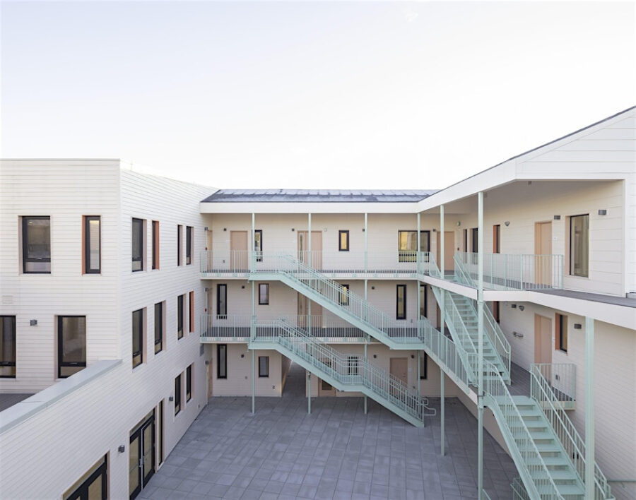

SHIFT Housing Summit: Afternoon Session
This convening of Chicago-based practitioners, scholars, and artists explores the social, political and ecological concerns around housing.
In its closing weeks, SHIFT will host a Housing Summit that brings together practitioners, researchers, policymakers, and cultural producers to reflect on housing as one of the Biennial’s central fields of inquiry. Developed in collaboration with the National Public Housing Museum and building on the research presented in the Inhabit / Outhabit capsule, the Summit unfolds across two sites: a morning session at the Museum, followed by an afternoon gathering at SHIFT’s exhibition venue at 840 N Michigan Avenue.
Through panels and discussions, the program frames housing not only as a spatial and architectural challenge, but as a political, social, and ecological question—and concludes with a poetry reading that opens space for reflection beyond disciplinary boundaries, underscoring SHIFT’s commitment to multiple forms of knowledge and expression.
Housing Design and Ingenuity
2:30 pm: Inhabit, Outhabit general premises, Igo Kommers Wender (CAB), Florencia Rodriguez (CAB), and Alexander Eisenschmidt (UIC); speaker introductions, Chana Haouzi (CAB)
2:45 pm: Alejandro Saldarriaga, alsar-atelier
3:15pm: Anda French, French 2D
3:45 pm: Break